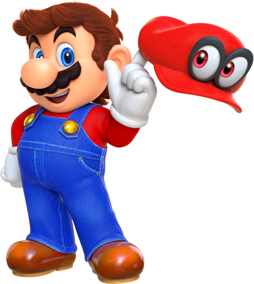
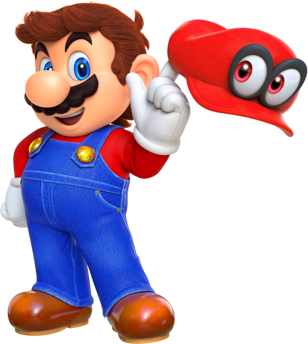

Super Mario World is gemaakt voor de SNES en de Game Boy Advance. Hier werdt Yoshi voor
het eerst geïntroduceerd. Omdat deze gelijk werd gemaakt voor de SNES hadden de
developers
veel meer mogelijkheden om het spel goed te maken.
Super Mario World wordt gezien als een
van de beste spellen in de serie van Mario spellen. Dit spel is wereldwijd meer dan 2
miljoen
keer verkocht. De game kreeg de bestverkochte status op de SNES, kreeg veel lovende
kritieken
en wordt vaak gezien in Nintendo 's beste games aller tijden op verschillende critici.
Veel van
de in het spel geïntroduceerde personages, spelmechanica en artistieke thema's waren van
invloed
op latere titels in de Mario -serie, waar het personage Yoshi populair genoeg was om een
serie
met hem te ontvangen . De game werd in 1995 gevolgd door een prequel, Super Mario World
2:
Yoshi's Island , die zich vele jaren vóór de gebeurtenissen in Super Mario World
afspeelt.
 
